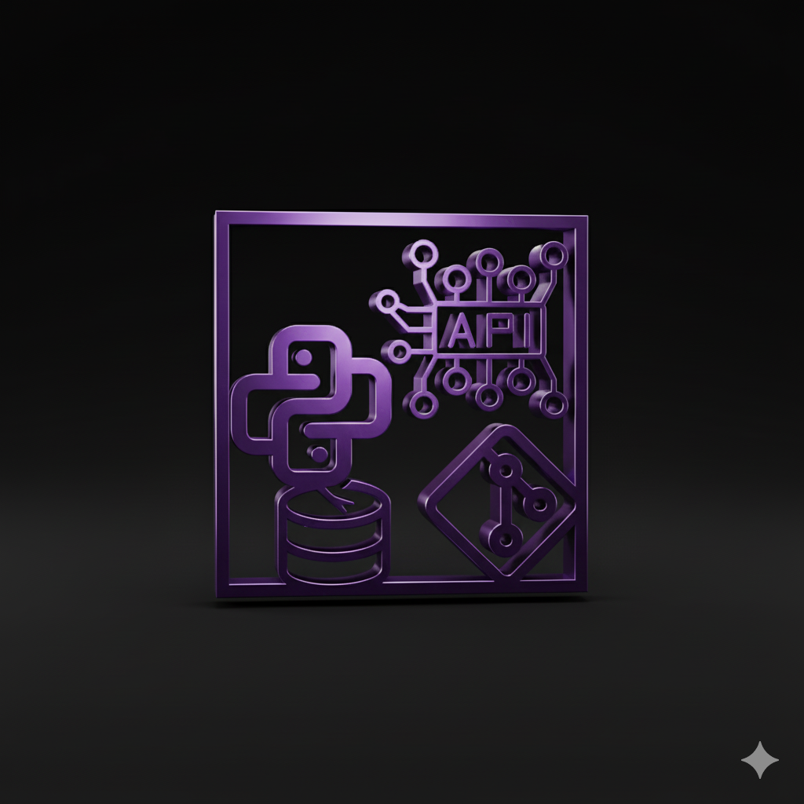

01
GitHub UserActivity
A containerised FastAPI backend that tracks GitHub users and their recent activity. It pulls data from the GitHub REST API, persists it in PostgreSQL through SQLAlchemy and serves it over clean REST endpoints.
Challenge: working within GitHub API rate limits and paginating data efficiently.
View source